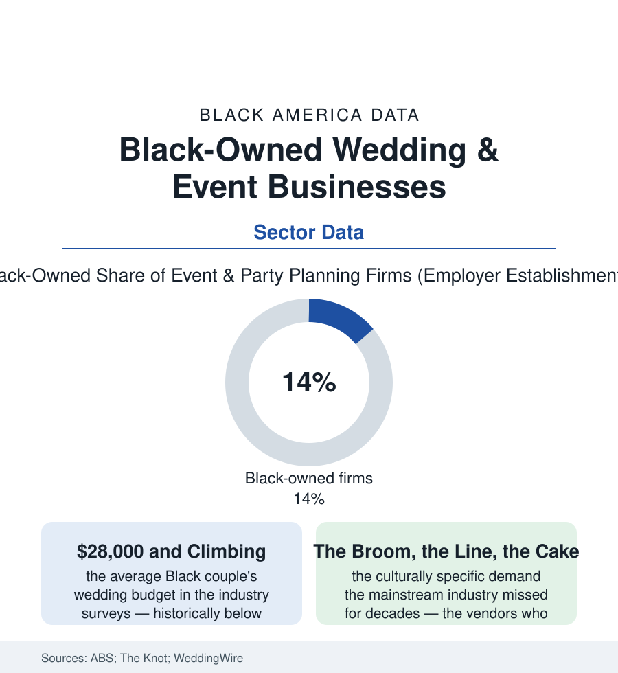

Black Business
The Wedding Industry, Black-Owned: Planners, Venues, and the Jumping Broom Economy
Weddings are a seventy-billion-dollar industry with a Black consumer base it long underserved — and Black vendors have built its most distinctive shelf. The wedding file.

A wedding is the largest party most families ever buy, and the industry built to sell it — some seventy billions of dollars a year in the market research — spent generations treating Black couples as an afterthought in its magazines and directories. The vendors of this file built the correction: Black-owned planning firms, venues, photographers, bakers, and bridal salons now form one of the consumer economy's most deliberately constructed shelves. This article reads the wedding file.
The Market the Industry Missed
The demand side was always documented: the marriage file's couples marrying later and, in the industry surveys, spending averages converging toward the national figure as incomes allowed (the Black couple's wedding in The Knot's research distinguishable in profile rather than in spirit — larger guest counts weighted to the extended family and the church, the reception as the community's event in a way the vendor interviews consistently describe, the budget's center of gravity shifted toward the experience rows — the music, the food, the photography — over the floral and paper rows of the traditional package). The supply side's failure was equally documented in the representation audits the wedding media eventually ran on itself: the magazine covers and the real-wedding features (Black couples at low single digits of the flagship publications' pages across decades in the media studies), the vendor directories' search geographies, the bridal salon's sample-size and skin-tone assumptions in the retail file (the dress shopping data's version of the beauty-supply story — the bride whose party cannot try the samples the salon stocks). Into that gap the Black wedding industry organized itself with unusual institutional completeness in the past two decades: its own associations and certification pipelines (the planners' networks and conferences), its own media (the wedding blogs and platforms built to feature what the flagships wouldn't — the audience data proving the market to the advertisers who had claimed it didn't exist), and its own vendor ecosystems in the wedding cities (Atlanta's shelf the deepest in the business data — planners commanding five-figure fees, venues in Black ownership from the mansion conversions to the industrial lofts of the real-estate file, the Divine Nine's caterers and the church kitchens' heirs professionalized).
The Business Beneath the Bouquet
The sector's economics are the service trades' with a seasonal spike: the planning firm's fee structures (the flat package against the percentage of budget, the day-of tier where the volume lives), the venue's position as the industry's real estate play (the owned hall monetizing every Saturday of the year — the building again, as in the laundry file, the quiet asset beneath the visible business, the Black venue owners of the development file converting the city's older halls and lodges into the celebration economy's plant), the vendor web's interdependence (the planner as the referral economy's switchboard, the photographer-baker-florist-DJ circuits of the Black wedding world a genuine guild structure the directories now compete to list). The corporate-events spillover steadies the leaders' books (the same firms producing the galas, the conferences, and the brand activations of the contracting file — the wedding as the portfolio's showroom rather than its whole business, the resilience data of the pandemic years sorting the diversified from the purely nuptial when the industry stopped dead in a single spring and restarted into its largest backlog on record). The file's forward rows are demographic: the marriage file's late-marrying, higher-earning couples are this industry's rising clientele, and the vendors who built the shelf when the mainstream wouldn't stock it now hold the cultural fluency the mainstream is hiring consultants to imitate — the broom, the line dances, the money dance, the second-line, each a line item whose competence cannot be faked at scale.
Reading the Wedding Data
The wedding file is the business section's celebration, and its numbers behave accordingly — a consumer market documented late by its own industry and built anyway by the vendors who knew it was there. The census counts the firms. The feature pages that finally followed the audience are the industry's own correction, published in its glossiest form. Every Saturday, in halls across this atlas, the shelf does its work in sequins and buttercream — the most joyful ledger in the business section, and one of its soundest.
More in Black Business
Black-Owned Businesses: Counts, Receipts, and the Representation Gap
About 161,000 Black-owned employer firms and three million solo ventures: how the Census Bureau counts Black business ownership, where firms concentrate, and the gap between population share and business share.
Black Median Net Worth: The Wealth Gap in Federal Reserve Data
The Federal Reserve puts Black median family net worth at $44,900, against $285,000 for White families — about 16 cents on the dollar. The widest gap in economic data.
Black Buying Power: The $1.8 Trillion Consumer Economy
Black buying power is estimated at about $1.8 trillion — larger than the economy of most nations. What the figure measures, who produces it, and what it buys.
Source: U.S. Census Bureau Annual Business Survey; The Knot and WeddingWire market research; Wedding industry association data; XO Group research on Black couples.